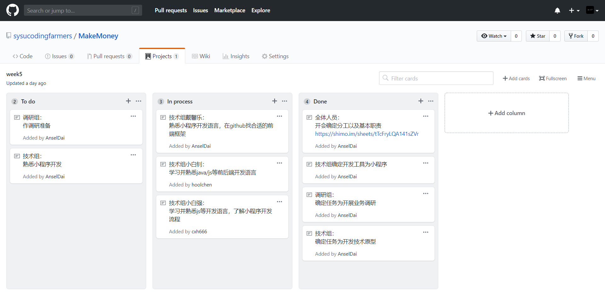
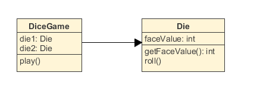

简答题
- 用简短的语言给出对分析、设计的理解
分析：分析强调对问题和需求的观察，而不是解决方法
分析的内容包括以下几方面内容：
1. 抽象出问题的本质
2. 在分析中不要想着编程语言的概念，应该使用所要分析的问题的语言
3. 使用问题的抽象，问题的表现，问题之间的相互作用来对问题进行概念上
的建模
设计：设计强调对问题的一个概念性的解决方法，包括软件和硬件上的，但是不包括
具体的实现方法
设计的内容包括以下几方面内容：
1. 为系统设计结构框架
2. 将问题的抽象映射成类
3. 将这些对象和问题的表现结合，设计类间的相互作用
4. 为实现设计一个软件抽象
5. 为类设计一个层级方便管理 - 用一句话描述面向对象的分析与设计的优势
面向对象的分析的优势：问题的分析者没必要很熟悉编程语言，降低了问题分析和实
现之间的沟通成本，可以使用一套通用的符号来进行交流
面向对象的设计的优势：面向对象的设计和面向对象的分析使用相同的建模符号，在
设计上可以实现一致性。不同是，设计着重于解决，分析着
重于问题。 - 简述 UML（统一建模语言）的作用。考试考哪些图？
UML的作用是：可视化分析和设计的结果
考试考的图：
1. 用例图：从用户角度来分析功能和执行者
2. 静态图：系统的静态结构
1) 类图 ：概念及其关系
2) 对象图：对象活跃的时间，状态以及对象之间的关系
3) 包图 ：描述系统的分解结构
3. 行为图：系统的动态行为
1) 交互图：描述对象间的信息传递
a. 顺序图：强调对象间传递信息的时序关系
b. 合作图：强调对象之间的动态协作关系
2) 状态图：对象的动态行为
3) 活动图：描述系统为了完成功能所需要进行的操作序列
4. 实现图：描述系统的组成和分布情况
1) 构件图：组成部件及其关系
2) 部署图：物理体系结构及软件单元的对应关系 - 从软件本质的角度，解释软件范围（需求）控制的可行性
软件范围控制，指的是从所得到的需求中选取一部分需求进行实现。一般，客户和开
发者对于其中20%的需求是明确的，而80%的需求是模糊的，所以进行软件范围控
制，实现客户感兴趣的目标是可行的。另外，由于软件的复杂性，不一致性，不可见
性和可变性，软件范围多数情况下都是模糊的，假如不进行软件范围限制，则可能超
出工期，超出预算，质量低下，从而导致软件危机。所以，进行软件范围控制是一个
软件项目的重中之重。
项目管理实践

UML绘图工具联系
